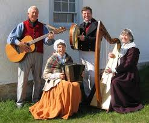

Celtic Folk
Celtic fok is a type of world music that evolved out of the folk music traditions of the Celtic people.
Celtic folk was a very important part of Celtic livelyhood as it refers to both orally-transmitted traditional music and recorded music and the styles vary considerably to include everything from traditional music to a wide range of hybrids. The main purpose music was used was for celebration this is very evident in Celtic culture.